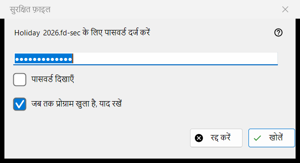
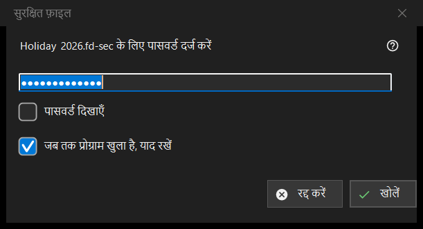

सुरक्षित फ़ाइल
यह किस लिए है
सुरक्षित कंटेनर, यानी .fd-sec फ़ाइल, का पासवर्ड माँगता है जब वह स्क्रीन पर आती है। यह तब खुलता है जब आप Enter दबाते हैं या लॉक फ़ाइल पर क्लिक करते हैं, और अपने आप तब जब आप ऐसी फ़ाइल पर रुकते हैं; स्लाइडशो सुरक्षित फ़ाइलों को छोड़ देता है और उन्हें गिनता है। सामग्री मेमोरी से दिखाई जाती है: डिक्रिप्ट की गई कोई चीज़ डिस्क पर नहीं लिखी जाती। केवल आधुनिक व्यूअर में।


इस क्रम में
- पासवर्ड टाइप करें; वह छिपा रहता है।
- यदि दूसरे कंटेनर वही पासवर्ड इस्तेमाल करते हैं, तो जब तक प्रोग्राम खुला है, याद रखें पर निशान लगाएँ।
- खोलें (Enter) दबाएँ।
- रद्द करें (Esc) फ़ाइल को लॉक रहने देता है।
तत्व
पासवर्ड
संकेत फ़ाइल का नाम बताता है। पासवर्ड दिखाएँ विकल्प शुरू में बंद रहता है। पासवर्ड ठीक वैसा ही लिया जाता है जैसा टाइप किया गया और मुख्य थ्रेड के बाहर जाँचा जाता है, इसलिए धीमी कुंजी-व्युत्पत्ति चलते समय व्यूअर प्रतिक्रियाशील रहता है; वह कभी रजिस्ट्री, फ़ाइल या Windows स्टोर में नहीं लिखा जाता।
जब तक प्रोग्राम खुला है, याद रखें
डिफ़ॉल्ट रूप से चुना होता है। यह पासवर्ड को प्रोग्राम बंद होने तक मेमोरी में रखता है, और केवल तब जब उससे कोई कंटेनर सचमुच खुल चुका हो; फिर व्यूअर उसे अगले कंटेनरों पर चुपचाप आज़माता है और तभी पूछता है जब वह मेल न खाए।
इनकार और खाली पासवर्ड
असफल प्रयास के बाद विंडो इस पंक्ति के साथ लौटती है: नहीं खुला: पासवर्ड ग़लत हो सकता है, फ़ाइल कभी कंटेनर रही ही न हो, या उसे बदल दिया गया हो। ये स्थितियाँ जानबूझकर एक-जैसी दिखती हैं: ग़लत कुंजी और बदले गए बाइट में फ़र्क़ नहीं किया जा सकता। क्षतिग्रस्त या असमर्थित कंटेनर को अपना संदेश मिलता है और पासवर्ड विंडो नहीं खुलती। खाली पासवर्ड स्वीकार होता है: Enter का पहला दबाव एक संदेश दिखाता है और दूसरा फ़ाइल खोल देता है; संदेश यह है: खाली पासवर्ड सुरक्षा नहीं है: ऐसी फ़ाइल केवल सरसरी नज़र से छिपी रहती है। खोलने के लिए फिर से दबाएँ।
रद्द करें
रद्द करें, Esc और बंद करने का बटन एक ही रास्ता हैं और कुछ नहीं बदलते। फ़ाइल पर यह लिखा दिखता है: पासवर्ड चाहिए - Enter दबाएँ या फ़ाइल पर क्लिक करें, और जब तक वह फ़ोल्डर खुला रहता है, व्यूअर उसके लिए दोबारा नहीं पूछता। Enter या फ़ाइल पर क्लिक फिर से पूछता है।